Main Lectures
Scientific Presentations
The scientific program features keynote speakers in the research areas of INCT-Defesa.
Synthetic Strategies
Experimental Characterization
Biological Evaluation & Validation
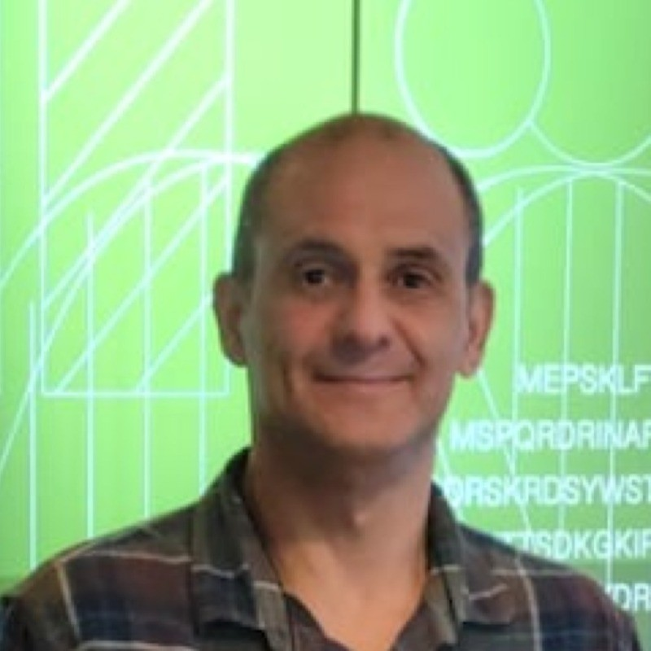
Tanos Celmar Costa Franca
Military Institute of Engineering (IME), Brazil
Molecular Modeling and Computational Design for Chemical and Biological Defense
Chemical Engineer with an MSc from UFRJ and a PhD from IME. His research focuses on Biochemistry, Medicinal and Organic Chemistry, particularly molecular modeling, organic synthesis, and drug discovery. He has international academic experience and has authored or co-authored more than 180 scientific articles.
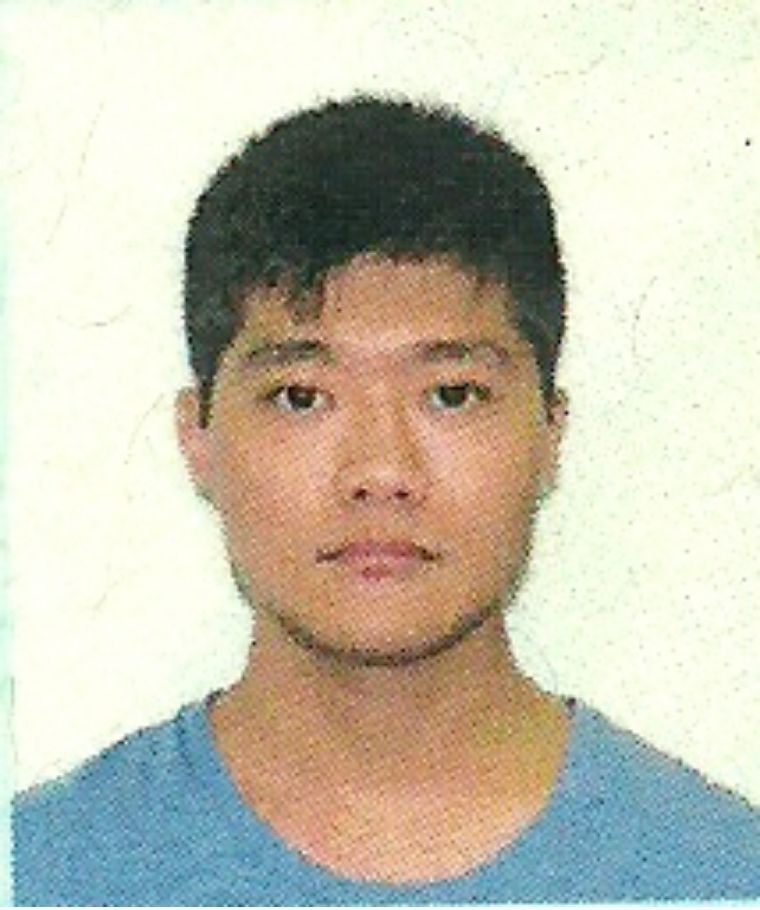
Maj Maj Daniel Antonio Shimizu Kitagawa
Army Technological Center (CTEx), Brazil
Synthetic Strategies for Chemical and Biological Defense
Chemical Engineer graduated from the Military Institute of Engineering (IME). His research focuses on Medicinal Chemistry, particularly chemical warfare agents, organophosphorus compounds, and acetylcholinesterase. He is also involved in research activities related to chemical, biological, radiological, and nuclear defense.
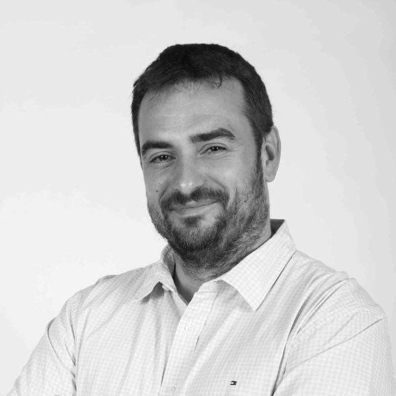
Kamil Kuca
UHK / University Defense, Czech Republic
Experimental Characterization of Molecules and Materials for Defense Applications
Toxicologist with a PhD from the University of Defence in the Czech Republic. His scientific work has received more than 60,000 citations, with an h-index above 100. His research focuses on pharmacology and toxicology, particularly antidotes for organophosphate poisoning and nerve agents, as well as drug design and discovery. He also works on chemical and biological threat assessment and the development of novel therapeutics.
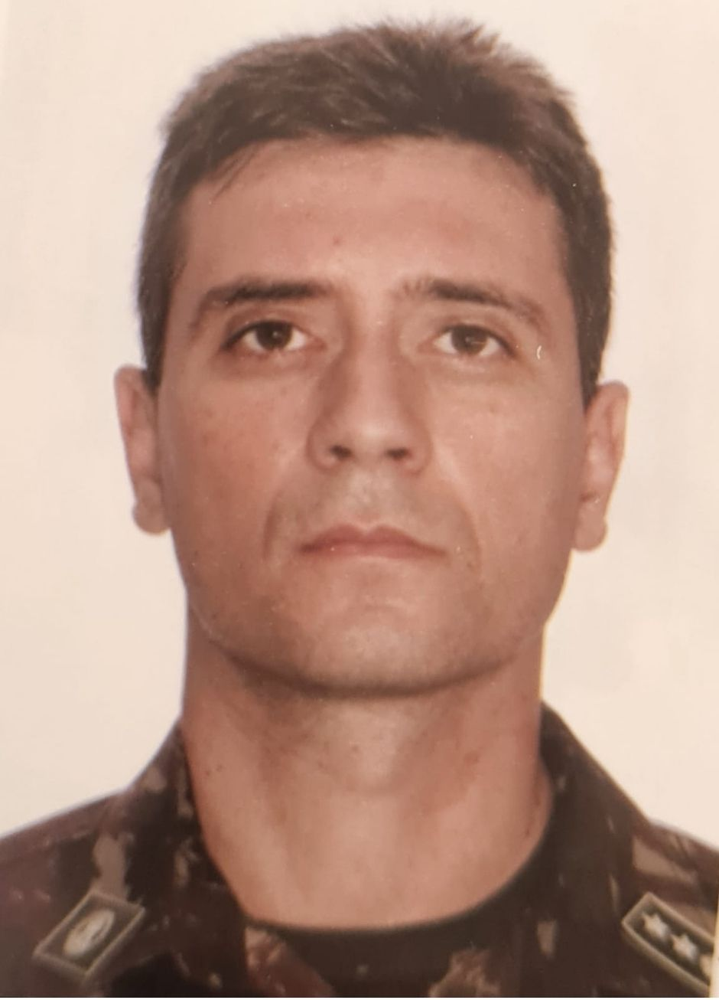
Diego Gomes da Rocha Voris
Army Technological Center (CTEx), Brazil
Opening lecture of Day 2
Chemical Engineer with an MSc in Chemistry from IME and a background in Military Sciences from AMAN. His work focuses on chemical defense, particularly the analysis and synthesis of chemical warfare agents. He is currently pursuing a PhD in Chemistry at IME and is responsible for the Chemical Analysis Laboratory (LAQ) at IDQBRN.
Flash Talks
Short Scientific Presentations
The scientific program will also include Flash Talks covering the four main areas of the workshop.
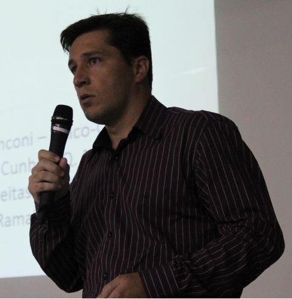
Matheus Puggina de Freitas
Federal University of Lavras (UFLA), Brazil
Molecular Modeling and Computational Design for Chemical and Biological Defense
Chemist with a PhD from UNICAMP and postdoctoral training at the same institution. His research focuses on Physical Organic Chemistry and Computational Organic Chemistry, particularly QSPR models, stereoelectronic interactions, and their effects on molecular properties and reactivity. He also has experience in the pharmaceutical industry and international scientific collaboration.
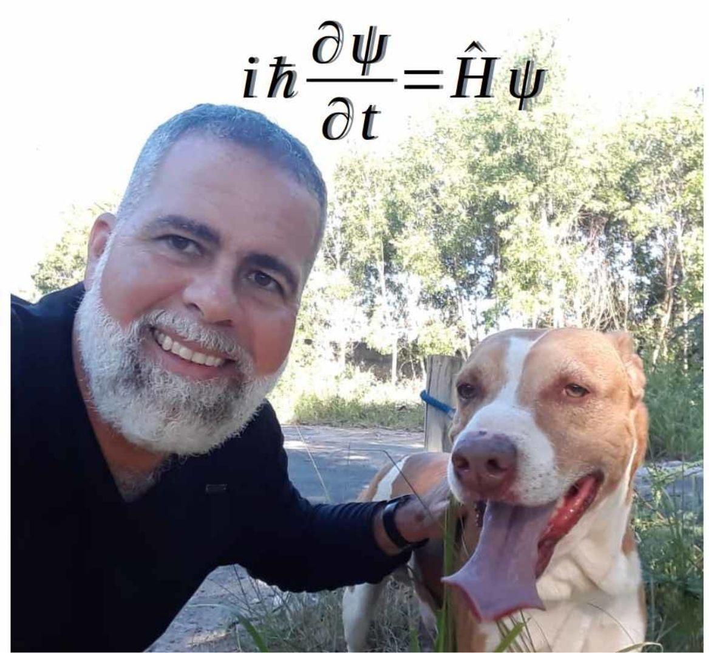
Arlan da Silva Gonçalves
Federal University of Espírito Santo (UFES), Brazil
Molecular Modeling and Computational Design for Chemical and Biological Defense
Chemist with an MSc from the Military Institute of Engineering (IME) and a PhD from the Federal University of Rio de Janeiro (UFRJ). His research focuses on molecular modeling and molecular dynamics, particularly organophosphate intoxication and the rational design of oximes for acetylcholinesterase reactivation. He also works on chemical and biological defense, glycan design, and computational chemistry.
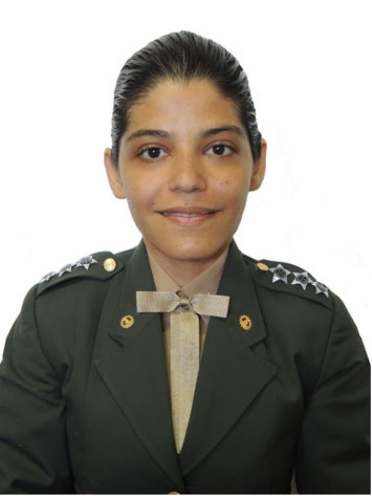
Maj Monique Cardozo
Army Technological Center (CTEx), Brazil
Experimental Characterization of Molecules and Materials for Defense Applications
Chemical Engineer with an MSc from IME and a PhD in Chemistry from UFRJ. Her work focuses on chemical defense, advanced chromatographic and spectrometric techniques, and the detection of chemical warfare agents and related hazardous compounds. She also has extensive experience in evaluating detection systems, protective equipment, and integrated solutions for the Brazilian Army.
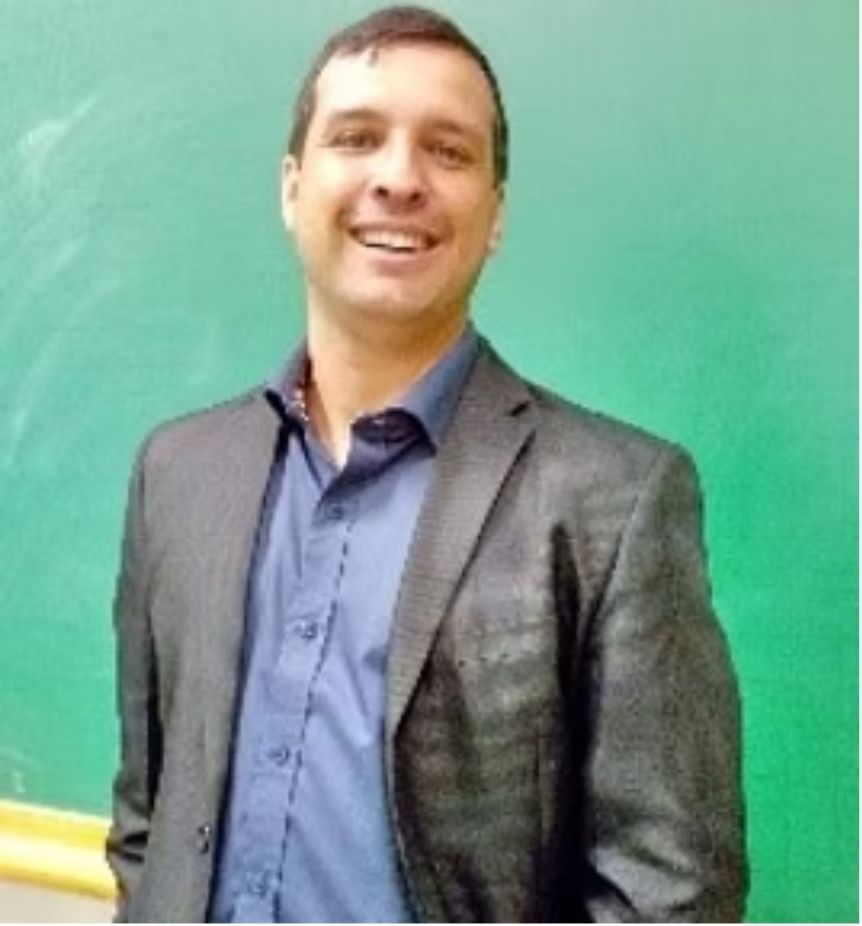
Nelson Luis de Campos Domingues
Federal University of Grande Dourados (UFGD), Brazil
Synthetic Strategies for Chemical and Biological Defense
Chemist with a PhD in Organic Chemistry from USP and postdoctoral training at the same institution. His research focuses on Organic Chemistry, particularly C–N, C–S, and C–Se cross-coupling reactions, heterogeneous catalyst design, sulfur chemistry, and biocatalysis. He is also a Fellow of the Royal Society of Chemistry and leads the Laboratory of Organic Catalysis and Biocatalysis at UFGD.
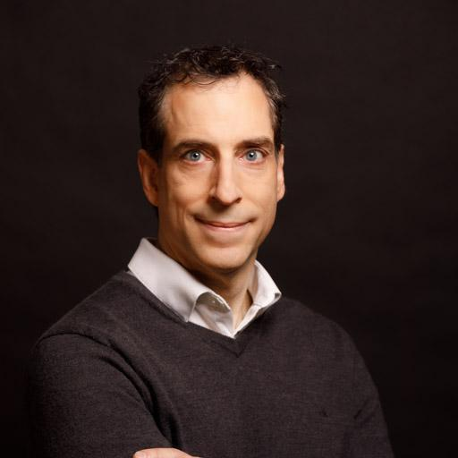
Pasquale Forgione
Concordia University, Canada
Biological Evaluation and Validation of Defense Technologies
Organic chemist with extensive experience in organic synthesis, green chemistry, medicinal chemistry, and drug discovery. His research focuses on cross-coupling reactions, palladium catalysis, and heteroaromatic chemistry, with emphasis on efficient and sustainable synthetic routes. He has published more than 80 scientific articles, with over 2,200 citations.
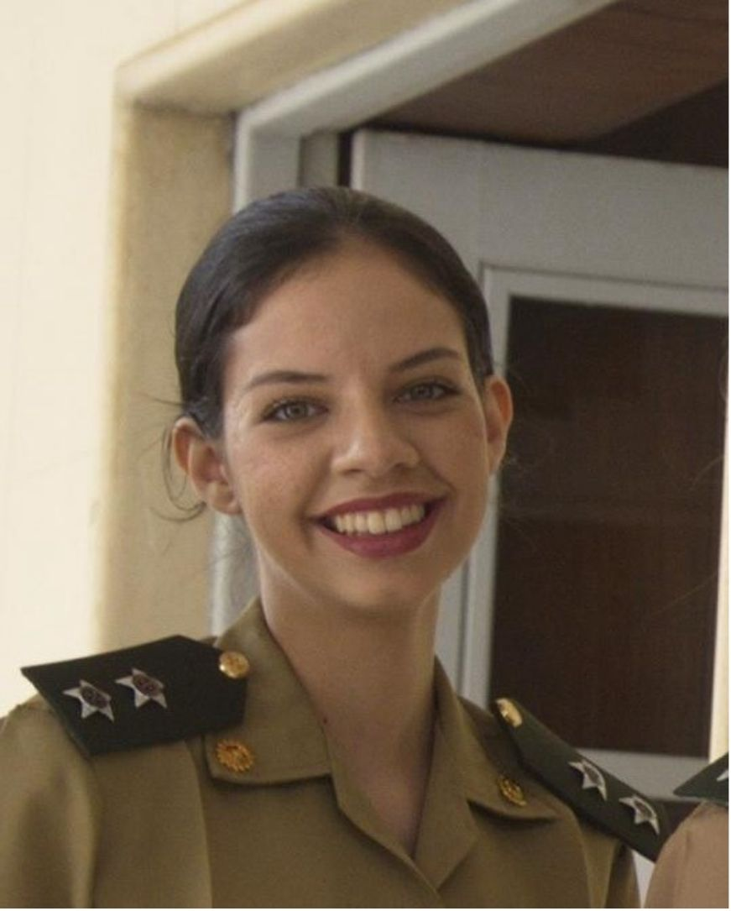
Cap Taynara Carvalho Silva
Army Technological Center (CTEx), Brazil
Experimental Characterization of Molecules and Materials for Defense Applications
Chemical Engineer with an MSc in Chemistry from IME. Since 2017, she has worked at the Institute of Chemical, Biological, Radiological and Nuclear Defense (IDQBRN), specializing in the detection of substances related to the Chemical Weapons Convention. She currently serves as Quality Manager and LC–MS analyst at the Chemical Analysis Laboratory.
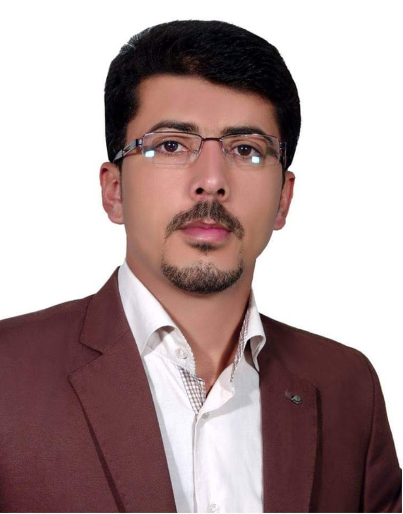
Hassan Rasouli
Tarbiat Modares University (Middle East)
Biological Evaluation and Validation of Defense Technologies
Researcher in agricultural biotechnology with interests in natural products and their interactions with cellular targets, particularly flavonoids and alkaloids. His work also investigates the cellular fate of bioactive compounds and the biodegradation of toxic metabolites in soil. His research integrates biotechnology, natural-product chemistry, and environmental applications.